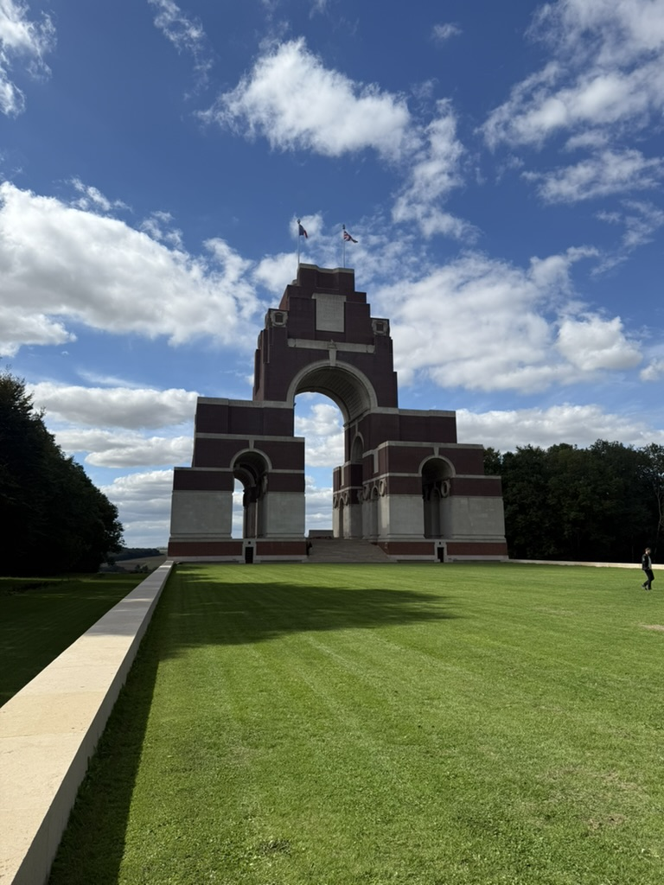

Fricourt, Somme
Battlefield of 1 July 1916 and the site of Ernest Harmson's death.

Thiepval
Memorial to the Missing; Ernest is named on Pier and Faces 2A, 2C and 2D.
York
Home of George and Esther Harmson at 118 Poppleton Road; civilian research to follow.